자동차정비기사 (2019-04-27 기출문제)
1과목: 일반기계공학
1. 잇수 40, 피치원 지름 100mm인 표준 스퍼기어의 원주피치는 약 몇 mm인가?
- 3.93
- 7.85
- 15.70
- 23.55
(정답률: 60%)

2. Ti의 특성에 대한 설명으로 틀린 것은?
- 비중이 4.5이다.
- Mg과 Al보다 무겁고 철보다 가볍다.
- 전기 및 열의 전도성은 Fe보다 크다.
- 내식성이 우수하다.
(정답률: 54%)
3. 두 힘 10N과 30N이 직교하고 있다. 합성한 힘의 크기는 약 몇 N인가?
- 31.6
- 38.7
- 40.0
- 44.7
(정답률: 41%)
4. 정밀한 금형에 용융금속을 고압, 고속으로 주입하여 주물을 얻는 방법으로 주물표현이 미려하고 정도가 높은 주조법은?
- 셀몰드법
- 원심주조법
- 다이캐스팅법
- 인베스트먼트 주조법
(정답률: 83%)
5. 3줄 나사에서 리드(lead)L과 피치(pitch) p의 관계로 옳은 것은?
- p=L
- L=1.5p
- p=3L
- L=3p
(정답률: 45%)
6. 다음 비중이 가장 낮은 경금속인 것은?
- Ag
- Al
- Cu
- Pb
(정답률: 72%)
7. 드릴 가공을 할 때, 가공물과 접촉에 의한 마찰을 줄이기 위하여 절삭날 면에 주는 각은?
- 나선각(helix angle)
- 선단각(point angle)
- 위브 각(web angle)
- 날 여유각(lip clearance angle)
(정답률: 84%)
8. 연강의 응력-변형률선도에서 응력이 최고값인 응력은?
- 비례한도
- 인장강도
- 탄성한도
- 항복강도
(정답률: 43%)
9. 압력 제어 밸브에서 어느 최소 유량에서 어느 최대 유량까지의 사이에 증대하는 압력은?
- 파괴 압력
- 절대 압력
- 흡입 압력
- 오버라이드 압력
(정답률: 75%)
10. 동일 축 상에 2개 이상의 펌프 작용 요소를 가지고, 각각 독립된 펌프 작용을 하는 형식의 펌프는?
- 다련 펌프
- 다단 펌프
- 피스톤 펌프
- 베인 펌프
(정답률: 63%)
11. 경화된 강 중의 잔류오스테나이트를 마텐자이트로 변태시켜 시효변형을 방지하기 위한 목적으로 하는 열처리로서 치수의 정확성을 요하는 게이지나 베어링 등을 만들 때 주로 행하는 것은?
- 오스템퍼링
- 마템퍼링
- 심랭처리
- 노멀라이징
(정답률: 69%)
12. 길이가 50cm인 외팔보에 그림과 같이 ω=4N/cm인 균일분포하중이 작용할 때 최대 굽힘 모멘트의 값은 몇 Nㆍcm인가?
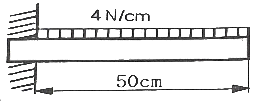
- 5000
- 4000
- 2500
- 2000
(정답률: 40%)
13. 제동장치에서 단식 블록 브레이크의 제동력에 대한 설명 중 옳은 것은?
- 제동 토크에 반비례한다.
- 마찰 계수에 반비례한다.
- 브레이크 드럼의 지름에 비례한다.
- 브레이크 드림과 블록사이의 수직력에 비례한다.
(정답률: 47%)
14. 1.5m/s의 원주속도로 회전하는 전동축을 지지하는 저널 베어링에서 베어링 하중은 2000N, 마찰계수가 0.04일 때 마찰에 의한 손실 동력은 약 몇 kW인가?
- 0.12
- 0.24
- 0.48
- 0.72
(정답률: 34%)
15. 소성가공 중에서 주전자, 물통, 배럴 등의 주름 형상을 만드는 데 적합한 가공은?
- 벌징(bulging)
- 비딩(beading)
- 헤밍(hemming)
- 컬링(curling)
(정답률: 61%)
16. 용접부의 검사법 중 시편 타단의 결함에서 반사되어 오는 반응을 시간적 연관성이 있는 오실로스코프에 받아 기록하는 방법은?
- 침투 탐상검사
- 자분 검사
- 초음파 검사
- 방사선 투과검사
(정답률: 78%)
17. 비트림을 받는 원형 단면 봉에서 발생하는 비틀림 각에 대한 설명 중 옳은 것은?
- 봉의 길이에 반비례한다.
- 극단면 2차 모멘트에 반비례한다.
- 전단 탄성계수에 비례한다.
- 비틀림 모멘트에 반비례한다.
(정답률: 50%)
18. 단동 왕복펌프의 피스톤 지름이 20cm, 행정 30cm, 피스톤의 매분 왕복횟수가 80, 체적효율 92%일 때 펌프의 양수량은 약 몇 m3/min인가?
- 0.35
- 0.69
- 0.82
- 1.42
(정답률: 52%)
19. 하중을 한 방향으로만 받는 부품에 이용되는 나사로 압착기, 바이스(vise) 등의 이송 나사에 사용되는 것은?
- 둥금나사
- 사각나사
- 삼각나사
- 톱니나사
(정답률: 61%)
20. 리밍(reaming)에 관한 설명으로 옳은 것은?
- 구멍을 뚫는 기본적인 작업
- 구멍에 암나사를 가공하는 작업
- 구멍 주위를 평면으로 가공하는 작업
- 뚫린 구멍을 정확한 크기와 매끈한 면으로 다듬질하는 작업
(정답률: 75%)
2과목: 기계열역학
21. R-12를 작동 유체로 사용하는 이상적인 증기압축 냉동사이클이 있다. 여기서 증발기 출구 엔탈피는 229kJ/kg, 팽창밸브 출구 엔탈피는 81kJ/kg, 응축기 입구 엔탈피는 255kJ/kg일 때 이 냉동기의 성적계수는 약 얼마인가?
- 4.1
- 4.9
- 5.7
- 6.8
(정답률: 36%)
22. 등엔트로피 효율이 80%인 소형 공기터빈의 출력이 270kJ/kg이다. 입구 온도는 600LK이며, 출구 압력은 100kPa이다. 공기의 정압비열은 1.004kJ/(kgㆍK), 비열비는 1.4일 때, 입구압력(kPa)은 약 몇 kPa인가? (단, 공기는 이상기체로 간주한다.)
- 1984
- 1842
- 1773
- 1621
(정답률: 25%)
23. 수증기가 정상과정으로 40m/s의 속도로 노즐에 유입되어 275m/s로 빠져나간다. 유입되는 수증기의 엔탈피는 3300kJ/kg, 노즐로부터 발생되는 열손실은 5.9kJ/kg일 때 노즐 출구에서의 수증기 엔탈피는 약 몇 kJ/kg인가?
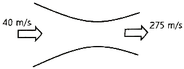
- 3257
- 3024
- 2795
- 2612
(정답률: 39%)
24. 가역 과정으로 실린더 안의 공기를 50kPa, 10℃ 상태에서 300kPa까지 압력(P)과 체적(V)의 관계가 다음과 같은 과정으로 압축할 때 단위 질량당 방출되는 열량은 약 몇 kJ/kg인가? (단, 기체 상수는 0.287kJ/(kgㆍK)이고, 정적비열은 0.7kJ/(kgㆍK)이다.)
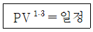
- 17.2
- 37.2
- 57.2
- 77.2
(정답률: 49%)
25. 어떤 시스템에서 공기가 초기에 290K에서 330K로 변화하였고, 이 때 압력은 200kPa에서 600kPa로 변화하였다. 이 때 단위질량당 엔트로피 변화는 약 몇 kJ(kgㆍK)인가? (단, 공기는 정압비열이 1.006kJ/(kgㆍK)이고, 기체상수가 0.287kJ/(kgㆍK)인 이상기체로 간주한다.)
- 0.445
- -0.445
- 0.185
- -0.185
(정답률: 35%)
26. 500W의 전열기로 4kg의 물을 20℃에서 90℃까지 가열하는데 몇 분이 소요되는가? (단, 전열기에서 열은 전부 온도 상승에 사용되고 물의 비열은 4180J(kgㆍK)이다.)
- 16
- 27
- 39
- 45
(정답률: 32%)
27. 어떤 시스템에서 유체는 외부로부터 19k의 일을 받으면서 167kJ의 열을 흡수하였다. 이 때 내부에너지의 변화는 어떻게 되는가?
- 148kJ 상승한다.
- 186kJ 상승한다.
- 148kJ 감소한다.
- 186kJ 감소한다.
(정답률: 63%)
28. 화씨 온도가 86℉일 때 섭씨 온도는 몇 ℃인가?
- 30
- 45
- 60
- 75
(정답률: 55%)
29. 체적이 500cm3인 풍선에 압력 0.1MPa, 온도 288K의 공기가 가득 채워져 있다. 압력이 일정한 상태에서 풍선 속 공기 온도가 300K로 상승했을 때 공기에 가해진 열량은 약 얼마인가? (단, 공기는 정압비열이 1.0⑤kJ/(kgㆍK), 기체상수가 0.287kJ./(kgㆍK)인 이상기체로 간주한다.)
- 7.3J
- 7.3kJ
- 14.6J
- 14.6kJ
(정답률: 49%)
30. 100℃와 50℃ 사이에서 작동하는 냉동기로 가능한 최대성능계수(COP)는 약 얼마인가?
- 7.46
- 2.54
- 4.25
- 6.46
(정답률: 60%)
31. 용기에 부착된 압력계에 얽힌 계기압력이 150kPa이고 국소대기압이 100kPa일 때 용기 안의 절대압력은?
- 250kPa
- 150kPa
- 100kPa
- 50kPa
(정답률: 62%)
32. 어떤 사이클이 다음 온도(T)-엔트로피(s) 선도와 같을 때 작동 유체에 주어진 열량은 약 몇 kJ/kg인가?
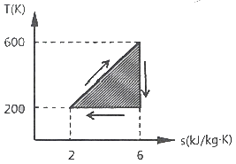
- 4
- 400
- 800
- 1600
(정답률: 59%)
33. 압력이 0.2MPa이고, 초기 온도가 120℃인 1kg의 공기를 압축비 18로 가역 단열 압축하는 경우 최종온도는 약 몇 ℃인가? (단, 공기는 비열비가 1.4인 이상기체이다.)
- 676℃
- 776℃
- 876℃
- 976℃
(정답률: 37%)
34. 클라우지우스(Clausius) 부등식을 옳게 표현한 것은? (단, T는 절대 온도, Q는 시스템으로 공급된 전체 열량을 표시한다.)
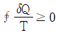
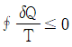
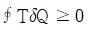
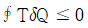
(정답률: 75%)
35. 압력이 100kPa이며, 온도가 25℃인 방의 크기가 240m3이다. 이 방에 들어있는 공기의 질량은 약 몇 kg인가? (단, 공기는 이상기체로 가정하며, 공기의 기체상수는 0.287kJ/(kgㆍK)이다.)
- 0.00357
- 0.28
- 3.57
- 280
(정답률: 31%)
36. 효율이 40%인 열기관에서 유효하게 발생되는 동력이 110kW라면 주위로 방출되는 총 열량은 약 몇 kW인가?
- 375
- 165
- 135
- 85
(정답률: 60%)
37. 그림과 같이 실린더 내의 공기가 상태 1에서 상태 2호 변화할 때 공기가 한 일은? (단, P는 압력, V는 부피를 나타낸다.)
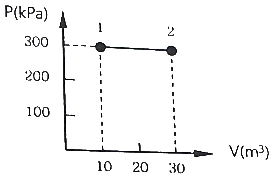
- 30kJ
- 60kJ
- 3000kJ
- 6000kJ
(정답률: 57%)
38. Van der Waals 상태 방정식은 다음과 같이 나타낸다. 이 식에서
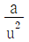
, b는 각각 무엇을 의미하는 것인가? (단, P는 압력, u는 비체적, R은 기체상수, T는 온도를 나타낸다.)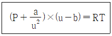
- 분자간의 작용 인력, 분자 내부 에너지
- 분자간의 작용 인력, 기체 분자들이 차지하는 체적
- 분자 자체의 질량, 분자 내부 에너지
- 분자 자체의 질량, 기체 분자들이 차지하는 체적
(정답률: 68%)
39. 보일러에 물(온도 20℃, 엔탈피 84kJ/kg)이 유입되어 600kPa의 포화증기(온도 159℃, 엔탈피 2757kJ/kg) 상태로 유출된다. 물의 질량유량이 300kJ/h이라면 보일러에 공급된 열량은 약 몇 kW인가?
- 121
- 140
- 223
- 345
(정답률: 14%)
40. 카르노 사이클로 작동되는 열기관이 고온체에서 100kJ의 열을 받고 있다. 이 기관의 열효율이 30%라면 방출되는 열량은 약 몇 kJ인가?
- 30
- 50
- 60
- 70
(정답률: 60%)
3과목: 자동차기관
41. 엔진의 크랭크축 재질로 가장 적합한 것은?
- 베어링 강
- 스프링 강
- 스테인리스 강
- 크롬 몰리브덴 강
(정답률: 80%)
42. 엔진에 사용되는 연료의 필요 옥탄가에 영향을 미치는 요소가 아닌 것은?
- 압축비
- 배기압
- 공연비
- 점화시기
(정답률: 64%)
43. 4기통 4사이클 엔진이 2000rpm에서 발생시킨 도시평균유효압렵은 5kgf/cm2이다. 실린더의 지름이 10cm, 피스톤의 행정이 10cm일 때 엔진의 도시마력은 약 몇 PS인가?
- 34.88
- 38.66
- 42.85
- 47.63
(정답률: 38%)
44. LPI 엔진에서 인젝터에 관한 설명으로 틀린 것은? (단, 베이퍼라이저가 미적용된 차량)
- 전류 구동방식이다.
- 아이싱 팁을 사용한다.
- 실린더에 직접 분사한다.
- 액상의 연료를 분사한다.
(정답률: 58%)
45. 아래 운행차 정밀검사의 경유자동차 매연측정방법에 관한 설명에서 ()에 알맞은 것은? (단, 무부하검사방법이다.)
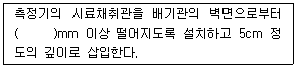
- 3
- 4
- 5
- 6
(정답률: 60%)
46. 자동차 엔진 연료 중 LPG의 특성 설명으로 틀린 것은?
- 저온에서 증기압이 낮기 때문에 시동성이 좋지 않다.
- 유독성 납화화물이나 유황분 등의 함유량이 적어, 휘발유에 비해 청정연료이다.
- LPG는 가스 상태로 실린더에 공급되므로 흡입효율의 저하에 의한 출력저하 현상이 나타난다.
- 액체상태에서 단위중량당 발열량은 휘발유보다 낮지만, 공기와 혼합상태에서의 발열량은 휘발유보다 높다.
(정답률: 50%)
47. 디젤엔진 연소실 형식 중 직접분사식의 장점으로 틀린 것은?
- 연료소비율이 향상된다.
- 연소실의 구조가 간단하다.
- 연료분사 개시압력이 타 형식에 비해 높다.
- 연소실 내에 전열면적이 좁아 냉각손실이 적다.
(정답률: 57%)
48. 엔진을 감속할 때 연료 공급을 일시 차단시킴과 동시에 충격을 방지하기 위해 감속 조건에 따라 스로틀밸브의 닫힘 속도를 제어하는 것은?
- 피드백 제어
- 공전속도 제어
- 대시포트 제어
- 패스트 아이들 제어
(정답률: 72%)
49. 디젤엔진의 전자식 연료분사장치에서 인젝터의 분사량 제어를 위한 입력신호가 아닌 것은?
- 부스터 압력
- 냉각수 온도
- 흡입 공기량
- 엔진 회전속도
(정답률: 64%)
50. 전자제어 가솔린엔진에 연속 가변밸브차이밍(CVVT) 시스템의 적용 목적으로 틀린 것은?
- 연비향상
- 공회전 안정화
- 배기가스 저감
- 엔진 냉각효율 향상
(정답률: 70%)
51. 전자제어 엔진의 지르코니아 산소센서에 대한 설명 중 틀린 것은?
- 배기가스 중의 산소 농도를 검출한다.
- 공연비 피드백 제어를 위하여 필요한 센서이다.
- 정상 작동 온도 이하에서는 산소 농도의 정확한 검출이 불가능하다.
- 배기가스 중 산소 농도가 높을수록 산소센서의 기전력은 약 5V 정도로 발생한다.
(정답률: 63%)
52. 디젤엔진 연소에 영향을 미치는 요소로 틀린 것은?
- 압축비
- 점화시기
- 흡기온도
- 엔진의 회전속도
(정답률: 65%)
53. 가솔린엔진에서 저온 시동성 향상과 관계가 있는 센서는?
- 산소 센서
- 대기압 센서
- 냉각수온 센서
- 흡입공기량 센서
(정답률: 73%)
54. 공기과잉률(λ)이란?
- 이론공연비
- 실제공연비
- 실제공연비/이론공연비
- 공기흡입량/연료소비량
(정답률: 75%)
55. 엔진 충진효율에 영향을 주는 요소 중 거리가 먼 것은?
- 흡입공기의 습도
- 흡기다기관의 형상
- 흡입공기의 입구온도
- 흡입공기의 입구압력
(정답률: 66%)
56. 전자제어 가솔린엔진에서 흡기온도를 감지하는 목적으로 가장 적합한 것은?
- 산소센서가 고장 시 대체 역할을 한다.
- 점화시기 제어에 기준이 되는 역할을 한다.
- 흡기유량센서 고장 시 연료분사를 조절하는 역할을 한다.
- 흡기온도에 따른 흡기공기의 밀도 변화를 보정하는 역할을 한다.
(정답률: 80%)
57. 이상적인 오토사이클의 효율을 증가시키는 방법으로 틀린 것은?
- 압축비 증가
- 체적비 증가
- 최고압력 증가
- 최고온도 증가
(정답률: 49%)
58. 디젤엔진에서 노크를 방지하는 방법으로 틀린 것은?
- 압축비를 높게 한다.
- 흡기온도를 높게 한다.
- 연료의 착화지연을 길게 한다.
- 연료의 착화시기를 정확하게 한다.
(정답률: 77%)
59. 전자제어 가솔린엔진(MPI)에서 연료의 분사량을 증가시키는 방법으로 옳은 것은?
- 연료펌프의 공급압력을 낮춘다.
- 인젝터 내의 분사압력을 낮춘다.
- 인젝터의 통전시간을 길게 한다.
- 압력조절기의 리턴 연료량을 증가시킨다.
(정답률: 88%)
60. 연소가스 온도가 1600℃, 냉각수 온도 85℃, 전열면적 1.538m2인 실린더를 가진 엔진의 방열량은 약 몇 kcal/h인가? (단, 열통과율 K=217.4kcal/m2ㆍhㆍ℃이다.)
- 506557.2
- 537160.4
- 632520.4
- 823250.2
(정답률: 50%)
4과목: 자동차새시
61. 유압식 브레이크 장치에서 마스터 실린더에 35kgf/cm2의 유압을 발생시키기 위해 필요한 페달 답력은 약 몇 kgf인가? (단, 마스터 실린더의 피스톤 단면적 4cm2, 배력장치 부압 0.8kgf/cm2, 배력장치의 피스톤 직경 14cm, 페달 레버비 4:1)
- 3.2
- 4.2
- 5.2
- 6.2
(정답률: 38%)
62. 자동차 섀시 스프링 중 스프링 상수가 자동적으로 조정되는 것은?
- 공기 스프링
- 판 스프링
- 코일 스프링
- 토션바 스프링
(정답률: 79%)
63. 자동차 정기검사에서 제동장치의 제동력 검사기준에 대한 설명으로 틀린 것은?
- 뒤축의 제동력은 해당 축중의 20퍼센트 이상일 것
- 주차 제동력의 합은 차량 중량의 50퍼센트 이상일 것
- 모든 축의 제동력 합이 공차중량의 50퍼센트 이상일 것
- 동일 차축의 좌ㆍ우 차바퀴 제동력의 차이가 해당 축중의 8퍼센트 이내일 것
(정답률: 66%)
64. 시동 후 주차브레이크 또는 ABS 경고등이 꺼지지 않을 때 점검해야 할 사항과 거리가 먼 것은?
- 프로포셔닝 밸브를 점검한다.
- 브레이크액 레벨을 점검한다.
- 진단 장비로 고장코드를 점검한다.
- 휠 스피드 센서 커넥터를 점검한다.
(정답률: 73%)
65. 전륜구동 차량에서 급출발 또는 급가속시 엔진 구동력의 영향으로 조향핸들이 한쪽 방향으로 쏠리는 토크 스티어가 발생하는 원인은?
- 조향핸들 조립 불량
- 엔진 마운트의 강도 저하
- 전체 타이어의 공기압 과대
- 드라이브 샤프트 길이와 각도 차이
(정답률: 69%)
66. 전자제어 현가장치의 특징으로 틀린 것은?
- 급제동 시 노스 업(nose up)을 방지한다.
- 노면으로부터 자동차의 높이를 제어할 수 있다.
- 급선회 시 원심력에 의한 차체의 기울어짐을 방지한다.
- 노면의 상태에 따라 자동차의 승차감을 제어할 수 있다.
(정답률: 68%)
67. 클러치의 동력전달 용량에 대한 설명으로 가장 적합한 것은?
- 용량이 작으면 내구성이 증대된다.
- 용량이 크면 접촉 충격을 줄일 수 있다.
- 용량은 엔진 회전토크와 동일하여야 한다.
- 용량은 클러치가 전달할 수 있는 회전력의 크기를 말한다.
(정답률: 48%)
68. 타이어의 편평비에 대한 설명으로 옳은 것은?
- 타이어 내경을 타이어 폭으로 나눈 백분율
- 타이어 폭을 타이어 단면 높이로 나눈 백분율
- 타이어 단면 높이를 타이어 폭으로 나눈 백분율
- 타이어 단면 둘레를 타이어 높이로 나눈 백분율
(정답률: 66%)
69. 지름 30cm인 브레이크 드럼에 작용하는 힘이 150kgf/일 때, 이 드럼에 작용하는 토크는 약 몇 kgfㆍm인가? (단, 마찰계수는 0.3이다.)
- 2.75
- 6.75
- 8.5
- 13.5
(정답률: 46%)
70. 공기 브레이크의 특징으로 틀린 것은?
- 베이퍼록이 발생하지 않는다.
- 자동차의 중량에 따른 제한을 많이 받는다.
- 페달 밟는 양에 따라 제동력이 조절된다.
- 공기가 다조 누출되어도 제동 성능이 현저하게 저하되지 않는다.
(정답률: 57%)
71. 조향장치가 갖추어야 할 조건으로 틀린 것은?
- 회전 반경이 작을 것
- 선회 저항이 적고 선회 후 복원이 좋을 것
- 조향 휠이 회전과 바퀴의 선회 차가 클 것
- 조향 조작이 주행 중 충격에 영향을 받지 않을 것
(정답률: 81%)
72. 자동변속기 자동차의 스톨 포인트에 대한 설명으로 옳은 것은?
- 클러치 포인트라고도 한다.
- 펌프는 회전하지만 터빈은 구동되지 않는상태이다.
- 스톨 포인트에서 펌프의 회전수와 터빈의 회전비가 ‘1’이다.
- 약한 제동이 걸린 상태의 스톨 포인트에서는 차량 구동력이 ‘0’이다.
(정답률: 57%)
73. 자동차가 주행할 때 작용하는 저항을 계산하는 식에서 자동차 중량이 요구되지 않는 것은?
- 구름저항
- 구배저항
- 가속저항
- 공기저항
(정답률: 77%)
74. 드라이브 라인에서 추진축의 길이 변화가 가능하도록 설치되어 있는 이음은?
- 슬립 이음
- 버필드 이음
- 트리포드 이음
- 더블 오프셋 이음
(정답률: 86%)
75. 자동차 현가장치에서 트레일링 암 형식에 관한 설명으로 틀린 것은?
- 바퀴의 상ㆍ하 운동에 의한 윤거나 캠버의 변화가 없다.
- 차제 양쪽에 주행방향에 수평으로 암을 설치하여 차축을 지지한다.
- 상ㆍ하 컨트롤 암의 길이에 따라 SLA형식과 평행사변형식이 있다.
- 스프링 작용은 쇽업소버와 액슬축에 장착된 토션바에 의해 이루어진다.
(정답률: 56%)
76. 유압식 전자제어 동력조향장치에서 고속에서는 정상이나 저속에서는 조향핸들의 조작력이 무거워지는 원인으로 가장 적절한 것은?
- 타이어 공기압 과다
- 오일탱크 오일양 과다
- 오일펌프 토출압력 과다
- 유량제어 솔레노이드 배선 단선
(정답률: 64%)
77. 무단변속기의 변속 방식 중 트랙션(트로이덜)방식의 특징에 대한 설명으로 틀린 것은?
- 작동이 정숙하다.
- 큰 출력에 대한 강성이 필요하다.
- 무게가 가볍고 일반오일 사용이 용이하다.
- 변속범위가 넓으며 높은 효율을 낼 수 있다.
(정답률: 54%)
78. 자동차의 4륜 구동장치의 특징으로 틀린 것은?
- 직진 안정성 향상
- 선회 안정성 향상
- 동력손실이 적어 연비 향상
- 미끄러운 노면 주행 안정성 향상
(정답률: 73%)
79. ABS가 작동할 때 제어장치의 신호에 의해 유압을 조절하는 하이드로릭 유닛의 구성품이 아닌 것은?
- 어큐물레이터
- 솔레노이드 밸브
- 휠스피드 센서
- 하이드로릭 펌프
(정답률: 54%)
80. “235/45R 17 91H"인 타이어의 호칭기호에 대한 설명으로 틀린 것은?
- 91:하중지수
- H:속도 기호
- 45:타이어 지름
- 235:타이어 폭
(정답률: 85%)
5과목: 자동차전기
81. 자동차의 전조등 회로에서 한쪽 전조등의 조도가 부족한 원인 중 가장 거리가 먼 것은?
- 전구의 열화
- 배터리의 용량 부족
- 반사경이 흐려졌을 때
- 전구의 설치 위치가 바르지 않을 때
(정답률: 73%)
82. 다음 중 차량 발전기에서 단상 대신 3상 교류발전기를 사용하는 이유로 가장 적합한 것은?
- 전류제한기가 필요 없어진다.
- 전력송전의 선로가 절약된다.
- DC발전기와 구조가 비슷해진다.
- 3배의 주파수 효과를 볼 수 있다.
(정답률: 62%)
83. 기동전동기의 주요 구성 요소가 아닌 것은?
- 회전력을 발생하는 부분
- 부하 전류를 측정하는 전류계
- 회전력을 엔진에 전달하는 기구
- 피니언을 링기어에 물리게 하는 부분
(정답률: 72%)
84. 다음 가솔린엔진 차량의 점화 2차 파형에서 점화플러그 간극, 압축비, 점화플러그 팁의 오염상태에 따라 달라지는 방전시간에 해당하는 구간은?
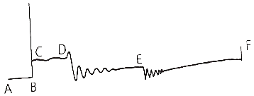
- A-B구간
- C-D구간
- D-E구간
- E-F구간
(정답률: 56%)
85. 플레밍의 오른손 법칙을 이용한 것은?
- 발전기
- 콘덴서
- 다이오드
- 트랜지스터
(정답률: 70%)
86. 그림과 같이 R1과 R2가 고정저항이고, R3이 NTC 수온센서인 회로에 대한 설명으로 틀린 것은?
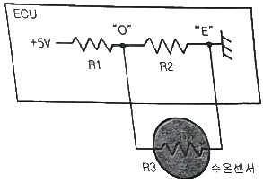
- 냉각수 온도가 높을수록 “O~E”에 걸리는 전압이 낮아진다.
- 냉각수 온도가 낮을수록 “O~E”에 걸리는 저항이 작아진다.
- 수온센서(R3)가 단선되면 “O~E”에 걸리는 전압은 높아진다.
- 수온센서(R3)가 단락되면 “O~E”에 걸리는 전압은 낮아진다.
(정답률: 42%)
87. 그림과 같이 10Ω, 20Ω, 30Ω의 저항이 병렬로 연결되어 전류계와 함께 배터리에 연결되어 있을 때 전류계에 흐르는 전류는 몇 A인가?
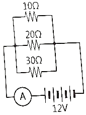
- 2.2
- 5.5
- 20
- 65.5
(정답률: 33%)
88. 무배전기 점화장치의 구성요소가 아닌 것은?
- 점화코일
- 서미스터
- 파워 트랜지스터
- 크랭크 각도센서
(정답률: 61%)
89. 자동차 오토 라이트 시스템의 특성에 대한 설명으로 옳은 것은?
- 전조등은 ACC전원만 사용한다.
- 하이빔과 로빔의 회로는 직렬회로이다.
- 전조등의 좌ㆍ우측 등화의 회로는 직렬회로이다.
- 자동차 주위의 밝기를 감지하여 전조등을 제어한다.
(정답률: 50%)
90. 다음 접지(-) 제어형 가솔린 인젝터 파형에서 아래쪽 화살표가 가리키는 곳의 설명으로 옳은 것은?
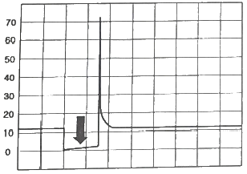
- 드웰 구간이다.
- 연료 분사구간이다.
- 역기전력에 의한 서지전압 구간이다.
- 점화 1차 코일에 전류가 흐르는 구간이다.
(정답률: 48%)
91. 자동차 에어백에 대한 설명으로 옳은 것은?
- 충돌감지 센서는 차량 측면에만 설치되어 있다.
- 부풀어 오른 에어백은 계속 그 상태를 유지해야 한다.
- 일정 이상의 충격이 가해지면 충돌감지 센서의 신호로 전개된다.
- 전방 에어백의 이상으로 경고등이 점등되어도 큰 충격이 가해지면 작동된다.
(정답률: 80%)
92. 배터리의 자기방전의 원인으로 가장 거리가 먼 것은?
- 충전 전압이 낮을 경우 방전된다.
- 전해액 중에 불순물이 혼입되어 국부 전지가 형성되었을 때 방전된다.
- 배터리 케이스의 표면에 전기 회로가 형성되어 누설에 의해 방전된다.
- 탈락한 작용물질이 극판의 아래 부분이나 측면에 퇴적되었을 때 방전된다.
(정답률: 60%)
93. 배터리의 보충전 방법이 아닌 것은?
- 전전류 충번법
- 정전압 충전법
- 단별전류 충전법
- 단별전압 충전법
(정답률: 36%)
94. 이그니션(IG) 키를 시동(스타트) 위치로 회전시켰을 때 이그니션(IG) 키 스위치 내부 접점단자의 연결이 옳은 것은?
- 상시전원-IGI-START
- 상시전원-IG2-START
- 상시전원-IGI-IG2-START
- 상시전원-ACC-IGI-START
(정답률: 59%)
95. 전자력과 자계에 대한 설명으로 틀린 것은?
- 전자력의 크기는 자게의 저항 크기에 비례한다.
- 전자력의 크기는 자계 내의 도선의 길이에 비례한다.
- 전자력의 크기는 자게의 세기와 도선에 흐르는 전류에 비례한다.
- 전자력의 크기는 도선이 자계의 자력선과 직각이 될 때에 최대가 된다.
(정답률: 44%)
96. 자동차 CAN통신의 CLASS구분으로 가장 거리가 먼 것은? (단, SAE 기준이다.)
- SLASS A:접지를 기준으로 1개의 와이어링으로 통신선을 구성하고, 진단통신에 응용되며 K-라인 통신이 이에 해당된다.
- CLASS B:CLASS A보다 많은 정보의 전송이 필요한 경우에 사용되며, 저속 CAN에 적용된다.
- CLASS C:실시간으로 중대한 정보교환이 필요한 경우로서 1~10ms간격으로 데이터 전송주기가 필요한 경우에 사용되며 파워트레인 계통에서 응용되고 고속 CAN통신에 적용된다.
- CLASS D:수백 수천 bits의 블록단위 데이터 전송이 필요한 경우에 사용되며, 멀티미디어 통신에 응용되며 FlecRay 통신에 적용된다.
(정답률: 46%)
97. 자동차 에어컨에서 팽창밸브 기능에 대한 설명으로 옳은 것은?
- 냉매를 기화하며 응축시킨다.
- 냉매를 고체화하여 팽창시킨다.
- 냉매를 기화하여 증발기에 보낸다.
- 냉매를 액화하며 압력을 상승시킨다.
(정답률: 73%)
98. 하이브리드 자동차의 주행에 있어 감속 시 계기판의 에너지 사용표시 게이지는 어떻게 표시되는가?
- RPM(엔진회전수)
- Change(충전)
- Assist(모터작동)
- 배터리 용량
(정답률: 75%)
99. 전압이 100V일 때 600W의 전열기가 있다. 전압이 변화되어 80V가 되었을 때 전열기의 실제 전력을 약 몇 W인가?
- 300
- 384
- 424
- 480
(정답률: 63%)
100. 하이브리드 자동차에서 하이브리드 모터 작동을 위한 전기 에너지를 공급하는 것은?
- 엔진제어기
- 고전압 배터리
- 변속기 제어기
- 보조배터리 충전 컨트롤 유닛
(정답률: 80%)
피치원 지름이 100mm이고 잇수가 40이므로 모듈은 다음과 같이 구할 수 있습니다.
모듈(m) = 피치원 지름(mm) ÷ 잇수
= 100 ÷ 40
= 2.5
따라서 표준 스퍼기어의 원주피치는 다음과 같이 구할 수 있습니다.
원주피치 = π × 모듈
= 3.14 × 2.5
= 7.85 (mm)
따라서 정답은 "7.85"입니다.